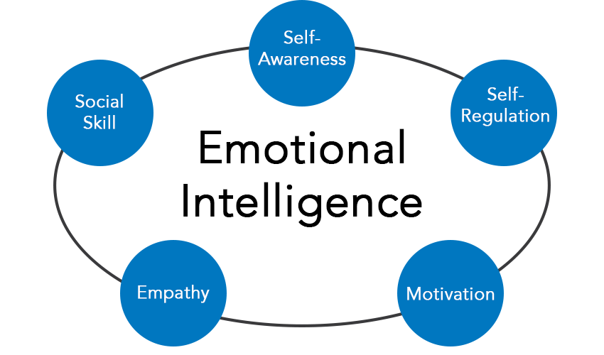

"Emotional intelligence (otherwise known as emotional quotient or EQ) is the ability to understand, use, and manage your own emotions in positive ways to relieve stress, communicate effectively, empathize with others, overcome challenges and defuse conflict. Emotional intelligence helps you build stronger relationships, succeed at school and work, and achieve your career and personal goals." 
Emotional Intelligence affects important parts of your life such as:
| Your performance at school or work. | High emotional intelligence can help you navigate the social complexities of the workplace, lead and motivate others, and excel in your career. |
| Your physical health | Being unable to control you emotions and stress can lead to various phycial ailments. It raises blood pressure, suppresses the immune system, increases the risk of heart attacks and strokes, contributes to infertility, and speeds up the aging process. |
| Your mental health | Physical health and mental health go hand-in-hand. If you are unable to manage your emotions, it can usually lead to depression and anxiety and long-term mental health issues. |
| Your relationships | The more you understand and the more you are able to control your emotions, the better you will be at communicating with other people areound you. The better you will also be at dealing with other people's emotions. |
| Your social intelligence | Social intelligence enables you to recognize friend from foe, measure another person’s interest in you, reduce stress, balance your nervous system through social communication, and feel loved and happy. |
"IQ is known as “Intelligence Quotient” and it’s a measure of a person’s relative intelligence.
Emotional Quotient, also known as EQ, is the ability to identify and manage your emotions and the emotions of others. The sky’s the limit for a person who excels in both areas."
EQ |
IQ |
| Identifying emotions | Visual and spatial processing |
| Perceiving how others feel | Knowledge of the world |
| Controlling one's own emotions | Fluid reasoning |
| Using emotions to facilitate social communication | Working memory and short-term memory |
| Relating to others | Quantitative reasoning |